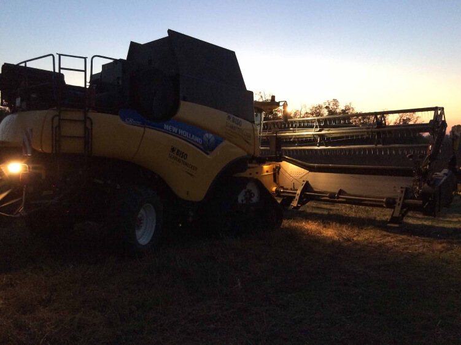

Для современного фермера важнейшей вещью является сбор урожая всех культур эффективно, быстро и с наименьшими потерями.
Чтобы достичь этих целей, мы сфокусировались на следующих важных моментах: оптимизация веса вместе с увеличением стабильности для жаток с шириной до 18,5 м; однородный и непрерывный поток срезанной массы к перемалывающим элементам комбайна; минимальное время настройки для разных культур; умная регулировка режущего угла по контуру земли, чтобы минимизировать потери на подающем столе и обеспечить точный срез на желаемой высоте. Всё это позволяет безопасно и эффективно передвигаться как по дороге, так и в поле, и это не говоря о несравненном сроке службы жатки.
Разработка уборочных машин BISO сопоставима с тюнингом автомобиля: производители комбайнов предоставляют прочную базовую модель - а мы, при помощи наших технологий, превращаем её в выигрышную “гоночную машину”, которая идеально соответствует всем требованиям наших клиентов.
Если вы заинтересовались, не стесняйтесь - свяжитесь с нами!
НАША ФИЛОСОФИЯ — КОМПАНИЯ BISO
Компания BISO построила свой первый измельчитель соломы для комбайна CLAAS в 1954 году. Но настоящая история начинается не с этого...
За последние 50 лет компании BISO ERNTETECHNIK, BISO SCHRATTENECKER и BISO разработали широкий спектр успешных и технологически интересных продуктов. Теперь, с новым поколением жаток 3D VARIOFLEX мы открываем новую главу в нашей истории, и продолжаем успехи всех этих лет. Как бы то ни было, интересная история компании, производящей уборочную технику для комбайнов, началась в 1985 году с расширения для рапса, позже названного BISO INTEGRAL CX100. Но давайте начнём с сегодняшнего дня.
Компания BISO построила свой первый измельчитель соломы для комбайна CLAAS в 1954 году. Но настоящая история начинается не с этого...
BISO выходит на рынок с совершенно новой жаткой, которая устанавливает новую категорию - класс 3D. В новую жатку интегрирована система vario с модулем flex, пневматической подвеской и совершенно новой интеллектуальной системой регулировки давления на грунт от 2-х до 50-ти кг. Вся эта технология интегрирована в раму HYBRID, которая хорошо показала себя на всех испытаниях. Мы впервые показали новую жатку нашим клиентам в ноябре 2019 года на выставке Agritechnica, и их первые отзывы оказались очень положительными.
BISO 3D VarioFlex AIR I - это совершенно новая жатка с гибридной рамой, модулем FLEX с параллелограммом, пневматической подвеской и множеством других интеллектуальных функций. И, конечно же, все это в сочетании с подающим столом VARIO. 3D - это НОВЫЙ СТАНДАРТ.
2017 – BISO 3D VARIOFLEX AIR i
В 2017 году мы начали тестирование программы 3D на наших собственных комбайнах. 3D VARIOFLEX AIR i представляет собой жатку с модулем FLEX с параллелограммом. Нож никогда ничего на себе не накапливает из-за крутящего момента, а система оснащена пневматической подвеской со специальными датчиками для регулировки «интеллектуальных» функций, таких как регулировка давления на грунт от 2-50 кг. Жатка также имеет множество автоматических функций. Водитель может активировать модуль FLEX и работать в полностью автоматическом режиме. С помощью этой жатки вы можете собирать все культуры, включая плоские, сою и горох высочайшего качества до высоты в 14 м. Эта жатка сможет легко “кормить” самые большие комбайны представленные на рынке модели комбайнов. BISO ожидает, что новая категория 3D станет стандартом в ближайшем будущем, как и система vario 20 лет назад.
Демонстрация технологии класса 3D-жаток - аккуратная работа режущего аппарата с помощью встроенной полностью автоматической интеллектуальной функции модуля FLEX с независимыми параллелограммами…
… и это результат во влажной и ОЧЕНЬ липкой почве. Вы можете отрегулировать давление на грунт от 2 до 50 кг …
… это AIR i …

… при любых условиях.
… при любых условиях.
Мы провели много испытаний в очень специфических условиях - разные культуры и разные почвы. 3D - это совершенно новое слово в технологии жаток. Прежде всего использование умных технологий сильно упрощает управление.
Тесты, проводившиеся в 2017 году на соевых полях. Некоторые из них оказались непростыми, но это было очень важно для калибровки программного обеспечения для новой жатки.

Стабильная и безупречная работа в режиме AUTO в течение долгого дня и до поздней ночи. Интеллектуальные функции BISO AIR i всегда «СВЕЖИЕ».